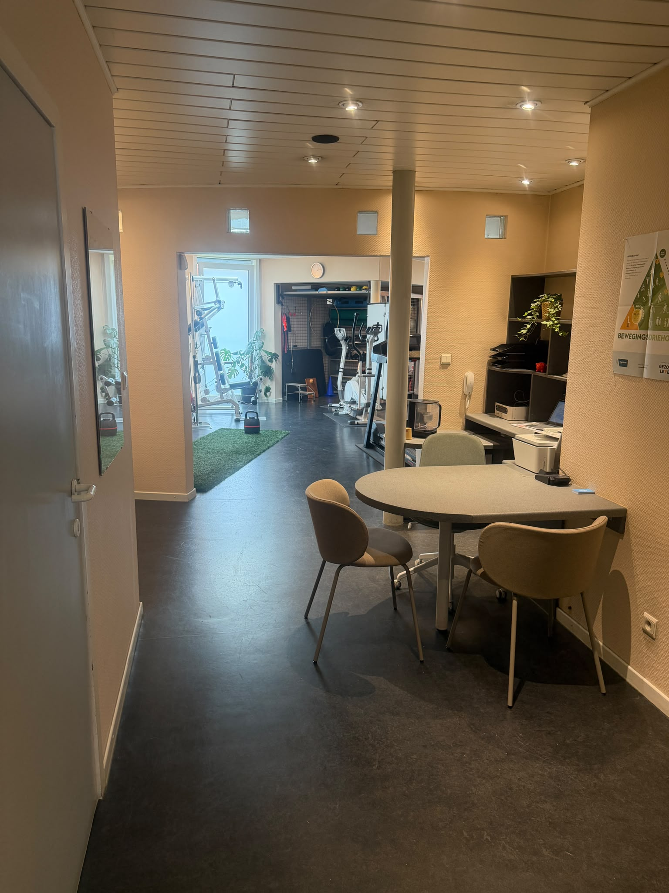

Beter slapen, sneller herstellen: wetenschappelijk onderbouwde slaapbegeleiding
Lig je 's nachts urenlang te woelen, schiet je gedachtenmolen wakker zodra je hoofd het kussen raakt, of word je uitgeput wakker? Bij Kine Strop in Gent begeleiden we je met beproefde gedragsmatige principes uit CBT-I en ACT om je natuurlijke slaapritme, energieniveau en weefselherstel duurzaam te herstellen.
Begeleiding door Egon Seldeslachts — Master in de Kinesitherapie & Manueel Therapeut (UGent).

Slaap is herstel
De krachtigste hefboom voor lichaam & zenuwstelsel.
Waarom slaap de ultieme herstelpijler is
Wie slecht slaapt, merkt het overdag meteen: minder energie, sneller overprikkeld en een lichaam dat gevoeliger reageert op pijn en belasting.
De wisselwerking tussen slaapproblemen en pijn
Tijdens diepe slaap herstelt je lichaam weefsels, worden afvalstoffen in de hersenen afgevoerd via het glymfatisch systeem en wordt je centrale zenuwstelsel opnieuw gekalibreerd.
Wanneer je slaap langdurig gefragmenteerd raakt, ontstaat er een duidelijke kettingreactie:
- Slechts enkele nachten met te weinig of onderbroken slaap verlagen de pijndrempel via centrale sensitisatie. Prikkels die normaal neutraal zijn, doen dan sneller pijn.
- Spieren, pezen en gewrichten herstellen trager na fysieke inspanning doordat herstelhormonen voornamelijk tijdens de diepe slaap vrijkomen.
- Het waaksysteem van je lichaam blijft continu actief. Zelfs als je fysiek uitgeput bent, raak je niet ontspannen genoeg om rustig in slaap te vallen.
Door slaap doelgericht aan te pakken, werken we niet enkel aan rustige nachten, maar geven we je lichaam de biologische randvoorwaarden terug om duurzaam te herstellen.
"Slapen is geen knop die je kunt omdraaien of forceren. Het is een natuurlijk biologisch proces dat vanzelf op gang komt zodra de waakzaamheid en de spanning in je zenuwstelsel zakken. We helpen je die natuurlijke voorwaarden opnieuw op te bouwen."
Egon Seldeslachts · Kine Strop Gent
Twee bewezen wetenschappelijke pijlers: CBT-I & ACT principes
Geen vage ontspanningstips of klakkeloze regeltjes, maar gedragsmatige handvatten die wetenschappelijk bewezen effectief zijn.
1. CBT-I principes (Gedragsmatige slaapbegeleiding)
CBT-I (Cognitieve Gedragstherapie voor Insomnie) is internationaal de eerste-keus aanpak bij langdurige slaapproblemen, met blijvend effect op lange termijn.
- Opbouwen van natuurlijke slaapdruk via een regelmatig dag-en-nachtritme
- Stimuluscontrole: het bed opnieuw verbinden met ontspanning in plaats van woelen
- Verbeteren van de slaapefficiëntie (de verhouding tussen tijd in bed en effectieve slaap)
- Praktische slaaphygiëne rond licht, cafeïne, beweging en kamertemperatuur
2. ACT principes (Acceptance and Commitment)
ACT leert je om de krampachtige strijd tegen slapeloosheid los te laten. Hoe harder je immers probeert in slaap te vallen, hoe meer spanning je opbouwt.
- Stoppen met de slaapstrijd: slaap laat zich niet forceren door wilskracht
- Defusie van piekergedachten: afstand nemen van nachtelijke rampscenario's
- Lichaamsrust toelaten in bed, ook op nachten dat de slaap trager komt
- Waardegericht handelen overdag, zonder dat vermoeidheid al je keuzes dicteert
Onze rol en bevoegdheid: transparant & integer
Paramedische coaching binnen het kinesitherapeutisch domeinBij Kine Strop hechten we veel belang aan een heldere en integere afbakening. Egon Seldeslachts is Master in de Revalidatiewetenschappen en Kinesitherapie en Manueel Therapeut (UGent).
Onze slaapcoaching is een paramedische leefstijl- en gedragsbegeleiding gericht op fysiologisch herstel, pijnregulatie en gezonde slaapgewoonten. We claimen geen wettelijk beschermde titels die we niet bezitten (zoals klinisch psycholoog, psychotherapeut of slaaparts), noch voeren we psychiatrische behandelingen uit.
We stellen geen diagnoses van medische slaapziekten. Vermoeden we tijdens de intake een onderliggende aandoening zoals slaapapneu (OSAS), rusteloze benen (RLS) of een primaire psychische aandoening? Dan verwijzen we je steeds tijdig door naar je huisarts, een specialist of een erkend slaapcentrum.
Voor wie is onze slaapbegeleiding bedoeld?
Onze coaching richt zich op mensen die vastlopen in slaapmoeilijkheden en op zoek zijn naar een actieve, onderbouwde oplossing.
Insomnie & woelen
Moeite om in slaap te vallen (langer dan een halfuur wakker liggen) of 's nachts urenlang wakker liggen en piekeren.
Pijnklachten & slaaptekort
Mensen met chronische rugpijn, nekpijn of fibromyalgie waarbij een slechte nacht rechtstreeks leidt tot meer pijnklachten.
Niet-verkwikkende slaap
Wel voldoende uren in bed liggen, maar 's ochtends opstaan zonder uitgerust gevoel, met aanhoudende vermoeidheid overdag.
Natuurlijk herstel
Mensen die op eigen kracht hun slaap willen herstellen of in overleg met hun arts willen toewerken naar een gezond natuurlijk slaapritme.
Hoe verloopt een slaapbegeleidingstraject bij Kine Strop?
Een overzichtelijk, persoonlijk en haalbaar traject in vier stappen.
Grondige intake (1 uur)
We brengen jouw slaappatroon, nachtelijke gewoonten, stressoren en eventuele fysieke klachten nauwkeurig in kaart.
Slaapdagboek (1–2 weken)
Met een eenvoudig en objectief slaapdagboek meten we je actuele slaapefficiëntie, waaktijden en patronen.
Actieplan & Oefeningen
Gerichte CBT-I en ACT tools: stimuluscontrole, ontspanning van het zenuwstelsel en het ontzenuwen van piekergedachten.
Opvolging & Verankering
Korte follow-upsessies waarin we bijsturen op basis van jouw vooruitgang, zodat je met blijvend vertrouwen slaapt.
Vragen over slaapcoaching bij Kine Strop
Duidelijke antwoorden op praktische vragen over onze slaapbegeleiding.
Slaap is de absolute biologische basis voor weefselherstel, herstel van het zenuwstelsel en pijndemping. Bij aanhoudende pijn of overbelasting zien we dat slaapgebrek de pijngevoeligheid direct verhoogt. Als kinesitherapeut begeleid ik de fysiologische en gedragsmatige aspecten van herstel, waarin slaap een onmisbare pijler vormt.
Nee. Egon Seldeslachts is Master in de Kinesitherapie en Manueel Therapeut (UGent). Dit is een paramedische leefstijl- en gedragsbegeleiding gericht op herstel en slaapgewoonten, geen klinisch-psychologische behandeling of medische somnologie. Titels als klinisch psycholoog, psychotherapeut of slaaparts zijn wettelijk beschermd. Bij een vermoeden van medische aandoeningen zoals slaapapneu (OSAS) of rusteloze benen (RLS) verwijzen we steeds door naar je arts of een gespecialiseerd slaapcentrum.
CBT-I (Cognitieve Gedragstherapie voor Insomnie) richt zich op stimuluscontrole (het bed opnieuw associëren met slapen), het opbouwen van natuurlijke slaapdruk en slaaphygiëne. ACT (Acceptance and Commitment Therapy) helpt je om de 'slaapstrijd' en frustratie los te laten, om te gaan met nachtelijk piekeren en het zenuwstelsel te laten kalmeren zonder krampachtig te moeten forceren.
Aangezien de consultaties plaatsvinden binnen onze kinesitherapiepraktijk en kaderen binnen een breder herstel- of revalidatietraject (bijv. bij fysieke klachten, rugpijn, overbelasting of chronische vermoeidheid), is een medisch voorschrift van je huisarts of specialist vereist voor terugbetaling via het ziekenfonds.
Na de uitgebreide intake (1 uur) en het slaapdagboek zijn gemiddeld 3 tot 5 gerichte follow-upsessies voldoende om merkbare en blijvende verbetering in slaapkwaliteit en rust te ervaren.